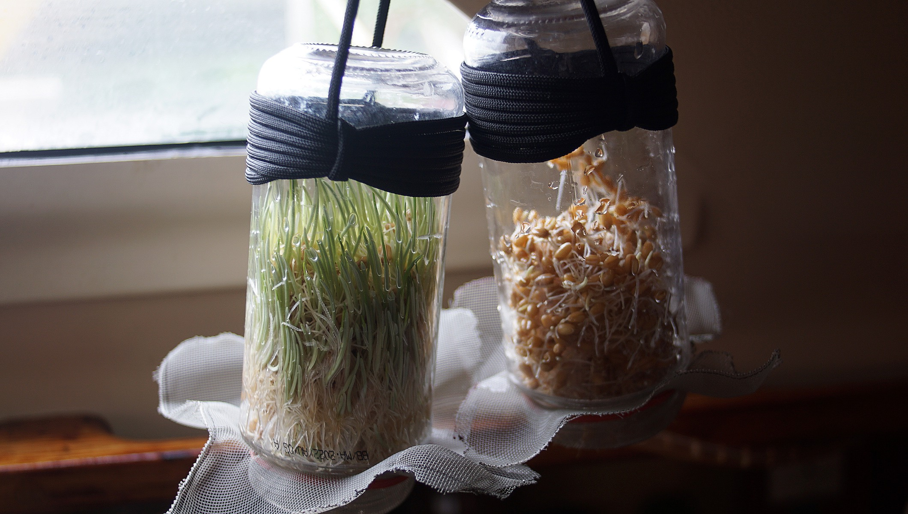
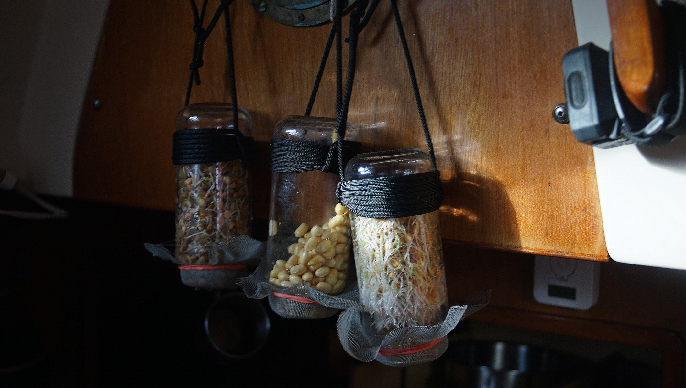
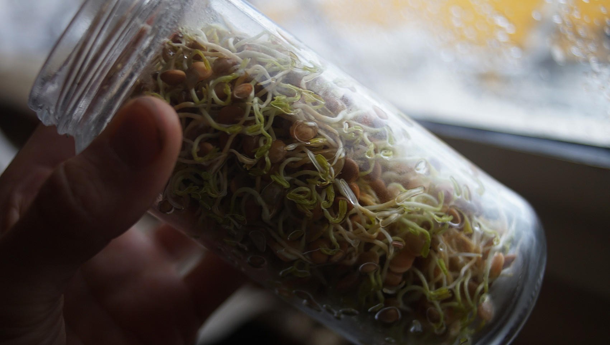
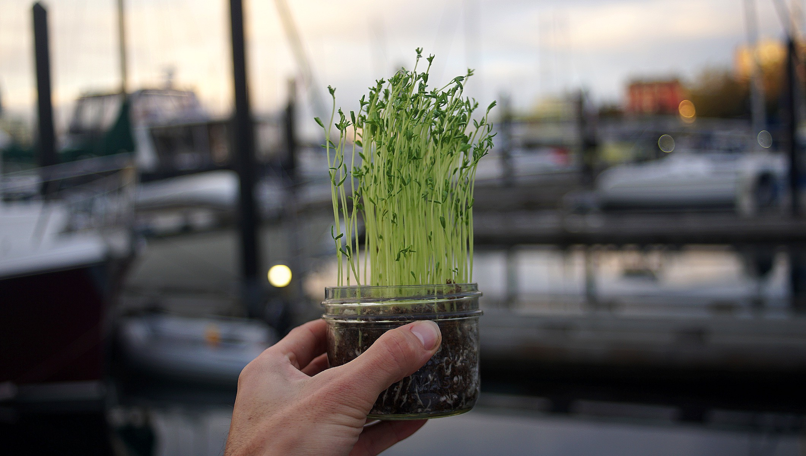

Sprouting
Sprouting involves germinating select seeds to be eaten raw or cooked, which is highly nutritious. The germination process takes a few days and can be done at home.
Sprouting, like cooking, reduces anti-nutritional compounds in raw legumes. It also increases protein quality[1], crude fibre content[2] and an overall increase in vitamin content [3].
Other advantages include reduced cooking times (which helps to save on fuel), as well as a reliable and constant source of fresh foods.
Note: while it is possible to eat raw sprouts, we prefer to thoroughly cook ours. Sprouting seeds purchased from a trusted source is sometimes not enough to guarantee it is contamination-free. Sprouts are very nutritious and offer a variety of health benefits, but keep in mind that they are also associated with a risk of food poisoning [4]. That said, for the majority of healthy people, the benefits of eating raw or lightly cooked sprouts likely outweigh the risks.
Table of contents
- Basic of sprouting
- Two sprouting methods
- Best time/length to eat sprouts
- Grains and similar seeds
- Other seeds
- Legumes
- Alfalfa, clover
- Garbanzo group
- Mung bean group
- Some Sprouting Seed Mixtures of Interest
- Soak Instead of Sprouting
- Staple Foods for Sprouting
- Easy for Beginners
- What are hard seeds?
- Anything wrong with sprouted legumes?
- What about toxins in alfalfa sprouts?
- Oat sprout milk
Content from below this line is copyrighted (c) 1995 by Thomas E. Billings. This document may be distributed freely for non-commercial purposes provided 1) this copyright notice is included, 2) the document is distributed free of charge, with the sole exception that a photocopy charge, not to exceed ten cents (U.S.) per printed page may be charged by those distributing this paper. All commercial rights reserved; contact author for details (contact address given at end).
Basics of Sprouting:
Obtain seed for sprouting. Store in bug-proof containers, away from extreme heat/cold. Seeds should be viable, and if possible, free of chemicals. Basic steps for sprouting seeds are:
- Measure out appropriate amount of seed, visually inspect and remove broken seeds, etc.
- Soak seed in water for appropriate time.
- Rinse soaked seed, put in sprouting environment for appropriate time.
Jars & Cloth: Two Suggested Sprouting Methods
Jar Method: Use wide-mouth, glass canning jars, available at many hardware stores. You will also need to make screen lids by cutting pieces of plastic mesh screens to cover the opening. Put seeds in jar, add water, put mesh lid on. When soak is over, invert jar and drain water through the mesh, then rinse again. Then prop jar up at 45 degree angle for water to drain. Keep out of direct sunlight. Rinse seeds 2-3 times each day until ready, always keeping it angled for drainage.
This method is more versatile; can grow greens in the jar (e.g., 6-8 day old alfalfa greens), and the jar is less likely to mold than cloth for sprouts that require more than 2 days. However, the jar method needs a convenient drainage system (otherwise mold can develop).
Cloth Method: Soak seeds in flat-bottom containers, in shallow water. When soak done, empty seed into strainer and rinse. Then take flat-bottom bowl or saucer, line bottom with wet 100% cotton washcloth, spread seed on wet cloth. Then take 2nd wet cloth and put on top of seed, or, if bottom washcloth is big enough, fold over wet seeds. Can add additional water to washcloths 12 hours later by a) sprinkling on top, or b) if very dry, remove seed from cloth, rinse, re-wet cloth, put seed back between wet cloths. Cloths used should be 100% cotton (terrycloth) or linen, used exclusively for sprouting, and of light colors. Cheap cotton washcloths (and cheap plastic bowls) work well and will last a long time.
This method can withstand some direct sunlight (direct sunlight in early stages of sprouting can cook the seed in jars), and needs no drainage system. The methods require roughly the same time, though 2nd service of cloth is very fast. Almonds, buckwheat give better results in cloth.
What is the best time/length to eat sprouts?
Ultimately you will answer this question by experimenting — growing sprouts and eating them at different ages/lengths. My preference is to eat sprouts (except almonds, pumpkin seeds) when the growing root is, on average, the length of the soaked seed. Almonds and pumpkin seeds are discussed below.
The sprouting times given below are based on cloth and/or jar method, and reflect an average time. The soaking times can be increased or decreased somewhat (except for buckwheat), with little or limited impact on the results. If you are using a different method, especially one of the commercial sprouting units, the times here will not apply and you will have to monitor your sprouts to decide when they are ready.
Grains and Similar Seeds
Amaranth: Soak 2-4 hours, sprout 1-1.5 days. Method: cloth. Very tiny seeds, likely to flow through screen in jar method; line strainer with sprouting cloth to retain seeds. Sprout can be very bitter. Might be able to grow as greens, if you can get appropriate variety of amaranth.
Barley: Soak 8-14 hours, sprout 1.25-1.5 days. Method: cloth or jar. Use only unhulled barley; "whole" hulled barley and pearled barley won't sprout. Chewy, somewhat bland sprout. Hulls are tough; people with stomach or intestinal ulcers might find hulls irritating. Can be used for grass also.
Buckwheat: Soak 15-20 minutes only; sprout 1-1.5 days. Method: cloth. Use hulled, *raw* buckwheat groats. Kasha is usually toasted, won't sprout. Raw buckwheat is white/green to light brown; toasted buckwheat is medium brown. Unhulled buckwheat (black hulls) are for greens, not general sprouting. Don't soak longer than 20 minutes as it spoils readily. Monitor moistness, rinse or change cloths every 12 hours to avoid spoilage. Good sprout, mild flavor. Sprouts much faster in warm/hot weather.
Field corn: Soak 8-14 hours, sprout 2.0+ days. Method: jar or cloth.
Popcorn: Soak 8-14 hours, sprout 1.5+ days. Method: jar or cloth. Blue mold can be a problem, esp. with field corn. Sweet corn seeds (if you can find them) will sprout also. Field corn sprouts, if long enough, are tender but bland/starchy tasting. Popcorn sprouts are very sweet, but the hull doesn't soften much in sprouting — very hard to eat. Not worth the trouble; suggest eating raw sweet corn (including raw corn silk, which is delicious) instead.
Millet: Soak 8-14 hours, sprout 1-1.5 days. Method: cloth or jar. Hulled millet — most seeds will sprout, but some ferment, producing very sharp taste. Unhulled millet best sprouter, but hull is very crunchy and sprout is rather bland. Best used in recipes.
Oats: Soak 8-14 hours, sprout 1.25-1.5 days. Method: cloth or jar. Must use unhulled oats; so-called "whole oats" or oat groats won't sprout. Good sprout, mild flavor similar to milk. Thick hull makes it difficult to eat; best used in recipes (see sprout milk recipe). Can grow as grass also.
Quinoa: Soak 2-4 hours, sprout 12 hours. Method: cloth or jar. Very fast sprouter. Must rinse seeds multiple times to get off soapy tasting saponin in seed coat. Very fast sprouter; can grow as greens. Strong flavor that many find unpleasant. Small seed, line strainer with cloth. White and black quinoa are available.
Rice: Soak 12-18 hours, sprout 1.0+ days. Method: cloth or jar. Only brown, unprocessed rice will sprout. White rice, wild rice are dead and won't sprout. Standard long grain rice doesn't sprout. Short, medium grain brown rice, also brown basmati (but not Texmati) rice will sprout. Before root appears, rice can be eaten but difficult: bland, chewy, *very* filling. Once root appears, rice sprout is very bitter. The only rice I suggest sprouting is: Lundberg Farms "Wehani" rice, a specialty rice (sprout 1.5 days). It is least bitter — less bitter than fenugreek — of possible use in recipes.
Rye: Soak 8-14 hours, sprout 1-1.5 days. Method: cloth or jar. Nice sprout — good flavor. Rye harvested immature or handled improperly can have strong, unpleasant flavored. If it molds, discard (ergot mold possible).
Triticale: Triticale is a cross between rye and wheat; used to be available from Arrowhead Mills, but haven't seen it in market for some years.
Wheat: including Kamut and Spelt: Soak 8-14 hours, sprout 1-1.5 days. Method: cloth or jar. Hard Winter wheat better than soft Spring wheat. Wheat can get excessively sweet at 2+ days of sprouting. Spelt has nice texture, but spelt and kamut are more expensive than ordinary wheat. Wheat, rye, kamut, spelt, triticale can be used for grass also.
Other Seeds
Almonds: Soak 10-14 hours, sprout 1.0 day. Method: cloth Use only unblanched almonds. Sprout+storage time should not exceed 2 days or sprouts may turn rancid. Best to peel sprouts before eating (peeled have incredible flavor). Peeling is tedious, reduced by blanching in warm water (15-30 seconds in hot water from faucet). One of the very best sprouts!
Cabbage, Kale: Soak 6-14 hours, sprout 1+ days. Method: cloth or jar. Very strong flavor, best used as flavoring in mixtures. Can also be grown into greens. Seeds relatively expensive.
Fenugreek: Soak 8-14 hours, sprout 18 hrs or more. Method: cloth or jar. Slightly bitter, best used as flavoring additive in mixtures. Hindi name: methi. According to "The Yoga of Herbs" by Lad/Frawley, fenugreek sprouts are good digestive aid and good for the liver. Hard seeds are common in fenugreek.
Mucilaginous seeds: flax, psyllium, chia These can be sprouted as flavoring additive in mixtures (alfalfa, clover, or mustard); to sprout alone requires special clay saucer method. Sprouts are not so good tasting, not worth the trouble for most people.
Mustard: Soak 6-14 hours, sprout 1.0+ days. Method: cloth, jar, or tray. Good flavoring additive for other sprouts. Available in 3 forms: black, brown, yellow. Brown seeds are smaller and harder to handle in mixtures; yellow or black recommended for mixtures. Can grow as greens also.
Pumpkin: Soak 8-14 hours; sprout (if you must) 1.0 day. True sprouting by pumpkin seeds (developing root) is quite rare. Bacterial spoilage and rancidity are problems when you try to sprout them. Best to simply soak them, then eat. Pumpkin seeds as sold in the market are not hulled - the variety grown has no hulls on its seeds.
Radish: Soak 8-14 hours, sprout 1.0+ days. Method: cloth, jar or tray. Very hot flavor! Use sparingly in mixtures as flavoring agent. Can be used for (hot!) greens also.
Sesame: Soak 8-14 hours, sprout 1-1.5 days. Method: cloth or jar. Must use unhulled sesame seeds for sprouting; hulled seeds can be soaked to improve flavor and digestibility. A black sesame seed (considered superior to white seed in Ayurveda) is available; haven't found it in unhulled form. Sprout+storage time should not exceed 1.5 days; sprouts continue to grow in refrigerator and start to get bitter at 2.0 day mark, and can be very bitter by 2.5 days. A small bowl of sesame sprouts, with a bit of raw honey on them, is very nice.
Sunflower: Soak 8-14 hours, sprout 18 hours. Method: cloth or jar. Use hulled sunflower; unhulled are for sunflower greens only. Need to skim off seed skins at end of soak period, when rinsing. If you leave them in, they will spoil and your sprouts will spoil quickly. Has a nice, earthy flavor; very popular.
Legumes
Peanuts: Soak 12-14 hours, sprout 1.5 days. Method: cloth or jar. Must use unblanched peanuts; recommend removing skins to improve digestibility. Spanish variety peanuts have loose skin, can remove most before soaking. Other peanuts - soak 1-2 hours then peel off skins, return to soaking in new, clean water. With peanut peeled you will probably observe high incidence of (bright) yellow mold - possible aflatoxin.
Peas, Blackeye: Soak 12-14 hours, sprout 1 day. Method: cloth or jar. Flavor is too strong to be eaten alone. Makes good flavoring additive for mixtures, if used sparingly.
Peas, (Field): Soak 12-14 hours, sprout 1.5 days. Method: cloth or jar. Be sure to buy whole peas, not split peas (split won't sprout). Yellow peas are slower to sprout, and have stronger flavor than green peas. Flavor too strong when raw for many people. Insect problems common with peas in storage (beetle infestation); store in bug-proof containers. Can be grown as greens also.
Alfalfa, Clover
For greens: soak 4-6 hours, sprout 6-8 days. Method: tray or jar.
For use when short: soak 4-14 hours, sprout 1-1.5 days. Method: jar or cloth.
Alfalfa and clover are most commonly grown as greens. A good non-traditional use for them is as flavoring additive in mixtures, for ex: lentil, alfalfa, radish is nice (alfalfa counteracts "heat" of radish). Alkaloid levels can be very high in alfalfa. Need alfalfa seed with very high germination rate (over 90%) to successfully grow greens in jar — else unsprouted seeds will decay and spoil greens.
Garbanzo group

Garbanzos, standard: Soak 12-18 hours, sprout 1.5+ days. Method: cloth or jar.
Kala channa: Soak 8-14 hours, sprout 1.5 days. Method: cloth or jar.
Green channa: Soak 8-14 hours, sprout 1.0 day. Method: cloth or jar. Garbanzos, also know as chick peas or ceci, are common in commercial mixtures. They sprout easily but they also spoil easily (bacteria or mold). Kala channa is a miniature garbanzo, sold in (East) Indian food stores, that sprouts reliably - try sprouting it instead of standard garbanzos. Green channa is similar, naturally green, and sprouts very quickly. Green channa has stronger flavor; best to eat with turmeric or ginger.
Large beans: Anasazi, Black, Fava, Kidney, Lima, Navy, Pinto, Soy, etc. Except for soy, these are irrelevant to the sprouter — raw flavor is truly horrible. Also, serious toxicity/allergy/digestibility issues with these raw beans. Except for soy (edible raw if grown long enough), these beans must be cooked to be digestible, hence are not of interest to the raw-fooder.
Lentils, brown/green and red. Soak 8-14 hours, sprout 1.0 day. Method: cloth or jar. The brown/green lentils come in a variety of sizes; the smallest sizes generally sprout faster than the larger. Red lentils are usually sold in split "dahl" form; for sprouting you must buy whole red lentils. Red lentils are red inside and brown outside; their Hindi name is masoor (brown masoor). Lentil sprouts have a spicy flavor and are very popular. Might find hard seeds in lentils from India.
Mung bean group
Mung beans: Soak 8-14 hours, sprout 18 hrs-1 day. Method: cloth or jar.
Urid/urad: Soak 8-14 hours, sprout 18 hrs-1 day. Method: cloth or jar.
Adzuki beans: Soak 8-14 hours, sprout 1.0 day. Method: cloth or jar.
Moth beans: Soak 8-14 hours, sprout 12-18 hrs. Method: cloth or jar. Urid (also spelled urad) is a black shelled mung bean, available in Indian stores. Stronger flavor than regular mung. Hard seeds common in mung and urid. Moth is a brownish bean, similar to mung, available in Indian stores. Very fast, reliable sprouter, with mild flavor — similar to mung. Discard "floaters" when sprouting moth. P.S. there is a mung bean that is yellow inside, in Indian stores, but so far have only found split (dahl) form.
Note: if purchasing kala channa, green channa, urid/urad, red lentils, etc. from Indian store, be sure to obtain the whole seeds, and not the split (dahl) or oiled form of the seeds.
Some Sprouting Seed Mixtures of Interest
- mung/adzuki, fenugreek
- mung/adzuki, urid, dill seed
- lentils, blackeye peas, alfalfa, radish
- sunflower seed, moth, fenugreek
- alfalfa/clover, radish/mustard (for greens)
Experiment and develop your own favorite mixtures!
Soak Instead of Sprouting
- Herb seeds: fennel, celery, caraway, cardamom, poppy, etc.
- Filberts: soak 12 hours; makes crisper, improves flavor.
- Pecans: soak 8 hours; long soaks can make mushy.
- Walnuts: soak 12 hours; flavor changes - you might like or dislike.
High fat nuts (brazil nuts, macadamias) may benefit some from soaking, but difference (soaked vs. unsoaked) is small.
Staple Foods for Sprouting
- First tier — Wheat, almonds, sunflower, sesame, mung/adzuki, rye
- Second tier, obstacles — Oats, barley, buckwheat, rice, lentils*, other legumes*
- Flavoring — Fenugreek, mustard, radish, kale, cabbage
*see question on legumes below.
Easy for Beginners
wheat, sunflower, almonds, lentil, mung.
Indoor Gardening (grown indoors, in soil)
- Grasses: wheat, barley, oats, rye, kamut, spelt, triticale, and others.
- Vegetables: amaranth, mustard/mizuna, fennel, kale, cabbage, etc.
- Legumes: peas, snow peas
- Other greens: buckwheat, sunflower
What are hard seeds?
Seeds that are hard, like rocks, and they stay that way during soaking and sprouting. Hard seeds are a sort of natural insurance in the sense that if planted in soil they will eventually sprout — late in the season or next season. Hard seeds may be a threat to certain types of dental work, esp. porcelain crowns (porcelain on gold crowns are stronger and hard seeds are less risk; metal crowns are stronger than natural enamel).
To minimize hard seeds, suggest you soak seeds as in the cloth method: in shallow water, in a large container with a flat bottom. Then at the end of the soak stage, you can visually inspect the soaked seeds and remove those that are still hard. This technique is not 100% foolproof, but if done carefully, will substantially reduce the number of hard seeds. The method will work with any seed, but fenugreek seeds are so small that picking out the hard ones is quite difficult.
Anything wrong with sprouted legumes?
If you can digest them without the production of a lot of gas (flatulence), there's nothing wrong with them. Legumes are very high in protein, hard to digest, and cause gas for many people. Gabriel Cousens (Conscious Eating, pgs. 70, 372, 490) recommends that consumption of sprouted legumes (except alfalfa, next question) be minimized.
Ann Wigmore (Rebuild Your Health, pg. 73) tells us that flatulence gas is toxic and harms your entire system. From an Ayurvedic viewpoint, legumes aggravate the vata dosha; individuals with vata body type or a vata disorder should minimize legumes. Ayurveda suggests eating turmeric or ginger with proteins (legume sprouts) as a digestive aid. A number of other herbs/spices can serve as digestive aids and/or counteract the vata effect of legumes. Among legumes, mung and adzuki beans are considered easiest to digest.
What about toxins in alfalfa sprouts?
Alfalfa sprouts contain saponins, a class of alkaloids (7.93% on dry weight basis, sprouts from commercial sources) and L-canavanine sulfate, an amino acid analog. Saponin levels are at their maximum when sprouts are 6-8 days old (most common time for eating); L-canavanine sulfate is present in the seed and decreases as the sprout grows. The issue of whether these factors are significant is subject to debate.
Livingston et al. (Nutritional and Toxicological Aspects of Food Safety, pgs. 253-268), citing research by Malinow, report negative health effects in animals and humans from consumption of alfalfa sprouts. They believe that consuming large amounts of alfalfa sprouts is risky.
Cousens (Conscious Eating, pg. 372) , citing relevant client cases, reports no harmful effects from consumption of moderate amounts of raw alfalfa sprouts.
Readers are encouraged to check the above references and decide for themselves on this issue. An alternate, experimental approach is to hold your diet constant for a few days, then add alfalfa sprouts to your diet, and observe the effects (if any) of the alfalfa — that is, listen to your body.
WARNING! Don't Sprout Sorghum (potentially toxic levels of cyanide in seed coat).
Oat Sprout Milk — Special Version
The following makes around 3 cups of delicious oat/almond milk.
Start with: a little more than 1/4 cup dry sprouting oats, and, optionally, 1/8 cup Lundberg Farms Wehani rice. Soak 12 hours, then sprout for 1.5 days. Separately, soak 15-20 almonds for 12 hours, then sprout for 1.0 days (should be ready about same time as oat sprouts).
Rinse oat(/rice) sprouts, put in blender with 2 cups good quality water, blend. Best to add 1 cup water, blend on medium for 30 seconds or so, then add second cup of water and blend on high for another 30-45 seconds. Now strain the blended liquid through a steel mesh strainer and/or cheesecloth (or similar).Discard hull pulp, rinse blender clean, put base milk back in blender.
Note that the recipe up to this point is the basic milk recipe; can use recipe, substituting other types of grains, seeds, or nuts for the rice, to yield other types of oat sprout milk. Sprouting/soaking details will vary with grain, seed, or nut used in place of the rice.
Peel the sprouted almonds (might blanch first with warm water), rinse, put almonds in blender. Add 1 tablespoon of raw honey (or other sweetener, optional) to blender. Now add flavoring, one of: vanilla bean (about 1/2 inch or so), cardamom seed (decorticated or powder, 1/4 tsp), or cinnamon (1 rounded tsp). Run blender on medium speed for a few seconds to mix/grind, then turn down to low speed and let blender run for 5+ minutes to homogenize. (The almonds are not strained out but retained in the milk for full flavor and nutrition.)
Author contact: T. Billings, 2125 Delaware St; #F; Berkeley, CA 94709
Other sources
- [1]Chavan, J. K.; Kadam, S. S.; Beuchat, Larry R. (January 1989). "Nutritional improvement of cereals by sprouting". Critical Reviews in Food Science and Nutrition. 28 (5): 401–437. doi:10.1080/10408398909527508. PMID 2692609.
- [2]Cuddeford, D. (1 September 1989). "Hydroponic grass". In Practice. 11 (5): 211–214. doi:10.1136/inpract.11.5.211. S2CID 219216512.
- [3]Peer, DJ; Leeson (Dec 1985). "S". Animal Feed Science and Technology. 13 (3–4): 191–202. doi:10.1016/0377-8401(85)90022-7.
- [4] Gensheimer, K.; Gubernot, D. (December 2016). "20 Years of Sprout-Related Outbreaks: FDA's Investigative Efforts". 10.1093/ofid/ofw172.1140.
See a mistake? Make a pull request on Github. Or contact us on twitter or mastodon.
Jump back to top.